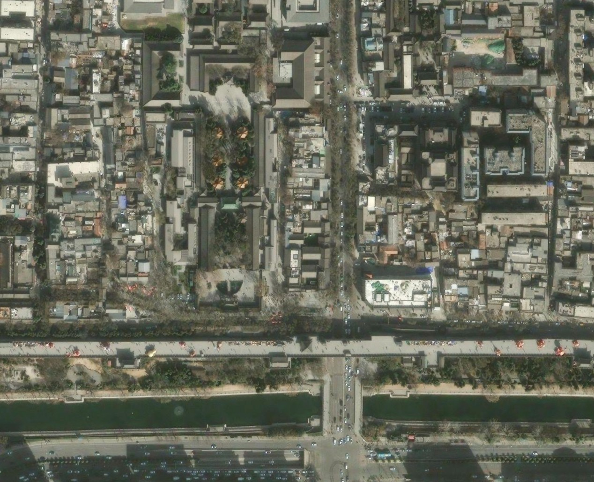

Exercise 1 — Reading the Invisible City
Multi-LLM Adversarial Analysis · May 22, 2026
Personal Naked-Eye Reading
No AI. No external sources. Pure human perception of morphology, spatial hierarchy, and tensions. The city wall and moat as defining spatial forms. Roads classified by importance. Residential growth without unified planning.
4-Model AI Baseline Description
Same prompt to Gemini 3.5 Flash, ChatGPT 5.5, Kimi K2.6, and Doubao. Each independently described the satellite image. Cross-model comparison revealed convergence on 3-texture morphology and scale clashes — but critical divergence on geography.
Four-Dimension Deep Analysis + Adversarial Stress-Testing
Fire Safety · Structural Aging · Heritage Conflict · Environmental Risk. Every claim linked to visual evidence, then classified as Verified / Plausible / Hallucinated. Adversarial testing via deliberate misidentification (Technique A) and cross-model confrontation (Technique B).
Error Taxonomy & Critical Reflection
6 error types identified through systematic cross-model comparison. Chinese models: cultural depth but over-interpret. Western models: visual rigor but impose foreign frameworks. AI's greatest value is not providing answers — it is forcing deeper thinking through its errors.
Site Documentation


Model Resistance Scores — Adversarial Stress-Testing Results
★★★☆☆ 3/5
Resists on reasoned judgment
Over-compliant on context"] C["ChatGPT 5.5
★★★★☆ 4/5
Independent analysis
Self-corrects when challenged"] K["Kimi K2.6
★☆☆☆☆ 1/5
Fatal geo misidentification
Xi an became Beijing"] D["Doubao
★☆☆☆☆ 1/5
Echo chamber effect
Zero independent stance"] G --> C --> K --> D classDef good fill:#00c853,stroke:#00a844,color:#fff classDef warn fill:#ffab00,stroke:#ff8f00,color:#333 classDef bad fill:#ff4444,stroke:#d50000,color:#fff class C good class G warn class K,D bad